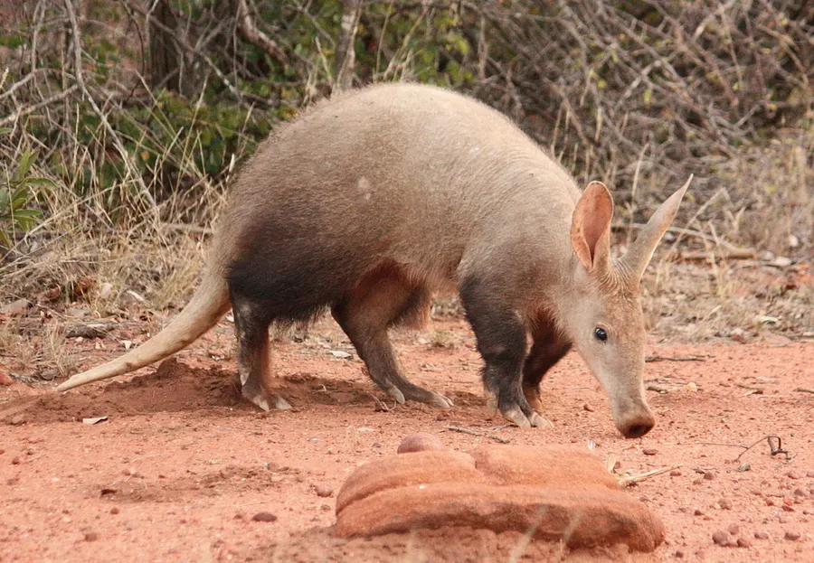

Oryctérope Aardvark
Orycteropus afer · Orycteropodidae · least concern
L'Oryctérope, parfois appelé cochon de terre par traduction de son nom en afrikaans erdvark est un mammifère essentiellement termitivore d'Afrique, qui joue un rôle écologique important en contrôlant l'extension des populations de termites. Il ne s'agit toutefois pas d'un fourmilier, ces derniers appartenant au super-ordre des xénarthres.
photo: no rights reserved, uploaded by Kelly Abram · CC0